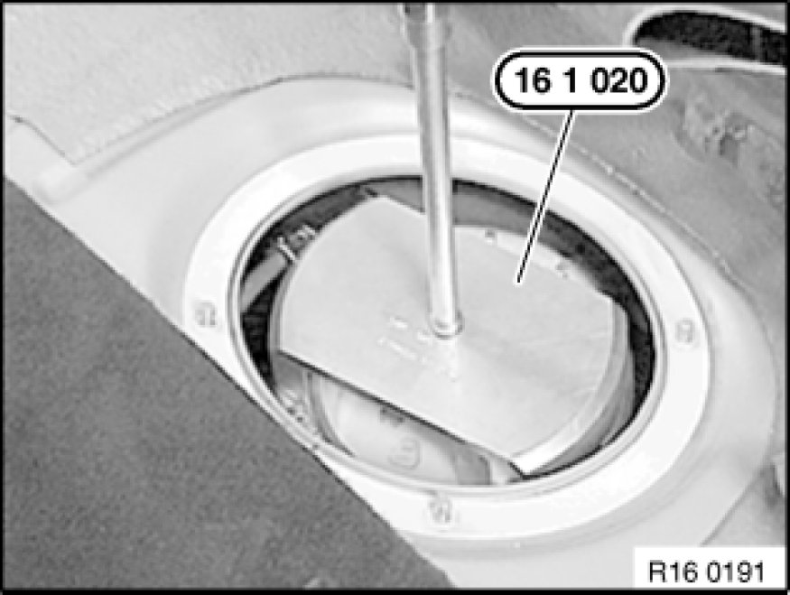
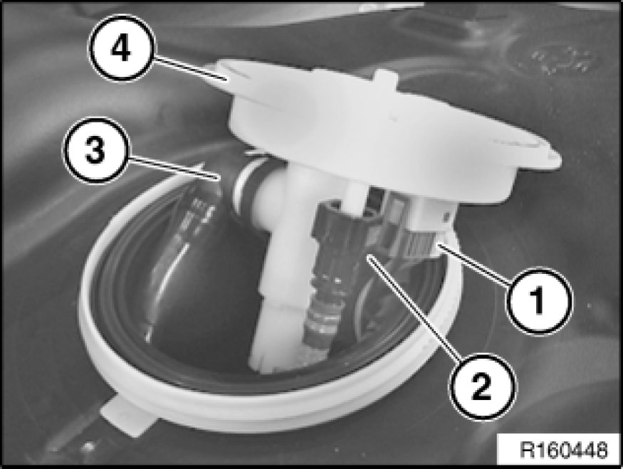
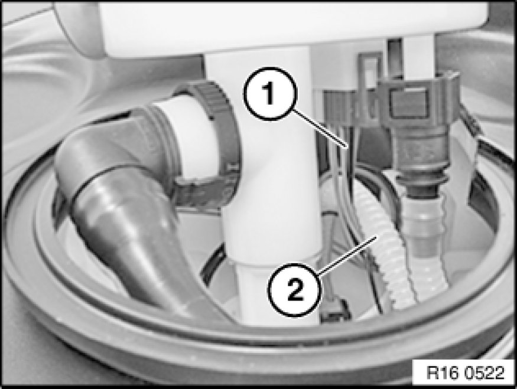
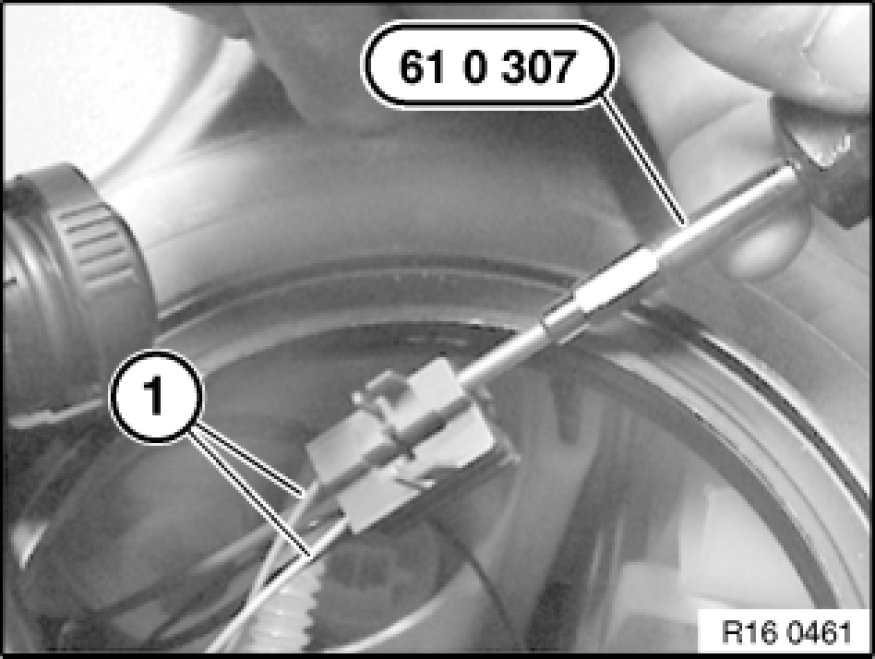

Fuel Pump: Service and Repair
16 14 010 - Removing and installing/replacing fuel pump (petrol/gasoline, N52)

Special tools required:
- 16 1 020 16 1 020 Pin Wrench
- 61 0 300 61 0 300 Releasing Tool (Complete Kit)
- 61 0 307 61 0 300 Releasing Tool (Complete Kit)
Recycling
Fuel escapes when fuel lines are detached. Have a suitable collecting container ready.
Catch and dispose of escaping fuel.
Observe country-specific waste-disposal regulations.

Important!
Ensure adequate ventilation in the place of work!
Avoid skin contact (wear gloves)!
Ensure absolute cleanliness when working on the open fuel tank.
Contaminants in the fuel tank can impair driving operation or may even result in vehicle breakdown!
Before starting the engine for the first time:
- Fill fuel tank with at least 5 liters of fuel.

Necessary preliminary tasks:
- Draw off fuel from fuel tank Procedures
- Remove rear seat bench Rear Seat, Through-Loading

Release screws (1) and remove cover (2) from right side of fuel tank.

Unlock and detach plug (1), fuel feed line (2) and service vent line (3).

Release screw cap with special tool 16 1 020 16 1 020 Pin Wrench and remove service cap.
Installation:
Tightening torque 16 14 2AZ 16 14 Fuel Pump.

Installation:
Service cap can only be installed in one position.
When installing, make sure lug (1) of service cap engages in corresponding opening (2) on fuel tank.
During torque tightening, notch (3) on screw cap can be clearly heard and felt to engage toothed segment (4) on fuel tank.
Replace rubber gasket.

Important!
Make sure that tab (1) of adapter ring lies completely in recess (2).

Carefully raise service cap (4) on right.
Important!
Carefully release quick-release fasteners and detach.
Make sure quick-release fasteners are correctly engaged.
Test the quick-release fasteners by pulling on them.
Unlock and detach fuel line (2).
Detach vent line (3).
Disconnect connector (1).

Installation:
Cable (1) must be laid in a loop around the corrugated tube (2).
Cable must not restrict freedom of movement of lever-type sensor!

Unlock and disconnect plug housing (1) using a screwdriver (2).

Unpin cables (1) issuing from lever-type sensor on blue plug using special tool 61 0 307 61 0 300 Releasing Tool (Complete Kit) from special tool kit 61 0 300 61 0 300 Releasing Tool (Complete Kit).
Note:
Plug connection on fuel pump must not be disconnected!
When the fuel pump is replaced, the cables and the blue plug are included in the delivery specification.
Press retaining lug (2) together simultaneously in direction of arrow and detach fuel line (1) from pressure regulator.
Unlock quick-release fastener (1) by pressing both white surfaces and detach.
Press retaining lug (1) in direction of arrow towards rear and lift out fuel pump with surge chamber (2).
Installation:
Fuel pump can only be installed in one position.
Make sure lug (4) of mounting engages opening in fuel pump.
Make sure fuel pump (2) is correctly positioned in guides (3).